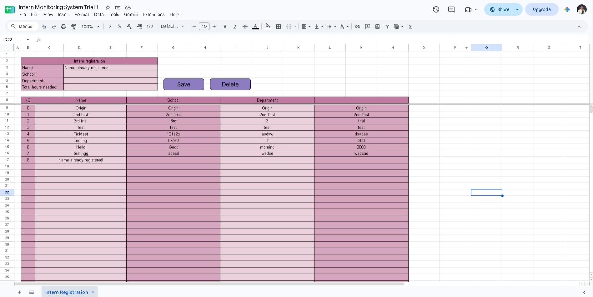
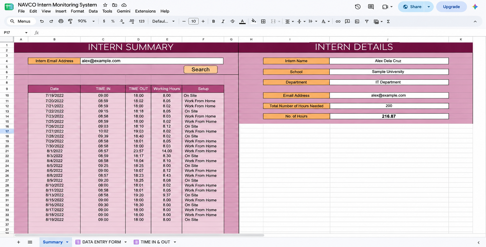
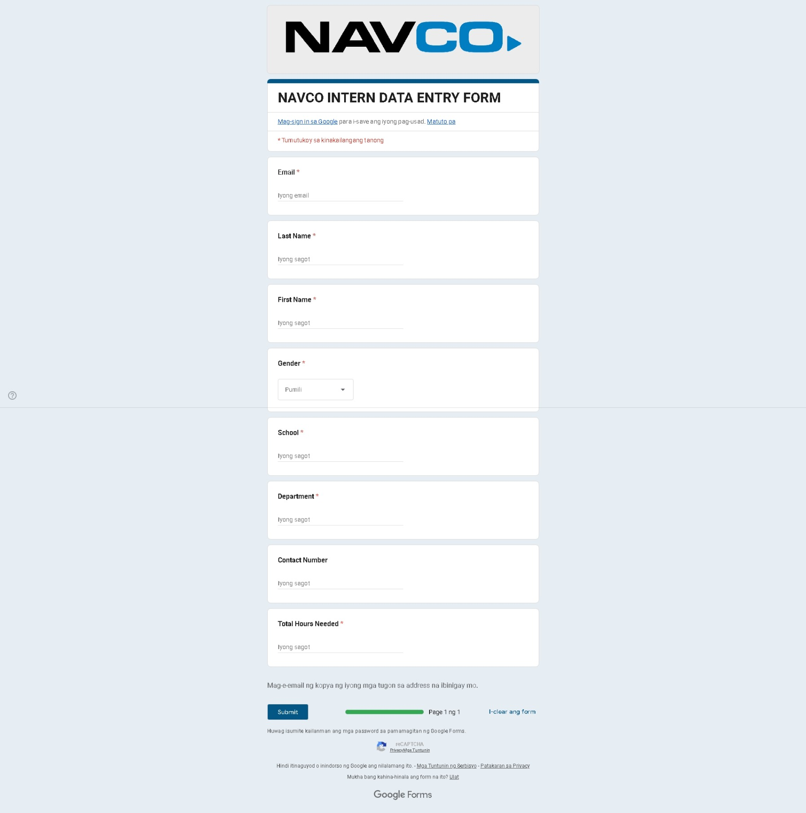
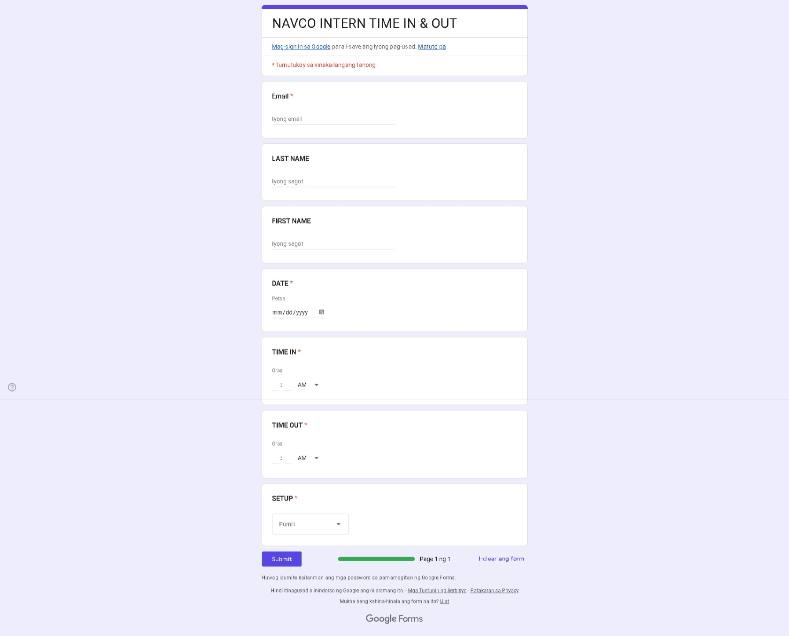

Project case study
NAVCO Intern
Monitoring System
Self-Initiated Workflow Automation Project
From manually tracked attendance to a Google Workspace workflow for intern registration, attendance records, and accumulated working hours.
- Organization
- Nauts & Vectors Company, Inc.
- Role
- IT Support Intern / Project Developer
- Context
- 200-hour internship · 2022
- Technologies
- Google Forms, Google Sheets, Google Apps Script, JavaScript
Project overview
I independently developed an intern monitoring system during my 200-hour IT Support internship at Nauts & Vectors Company, Inc. in 2022.
The project was not part of my assigned responsibilities. I independently identified the problem after observing HR personnel manually monitoring internship attendance and calculating accumulated working hours, then voluntarily developed the system to help HR.
The problem
Interns reported their time-in and time-out information through messaging platforms. HR personnel maintained the attendance records and manually calculated accumulated internship hours.
This workflow required HR to bring attendance information together from messages and calculate each intern's progress toward their required hours.
My initiative
I voluntarily researched Google Workspace and taught myself Google Apps Script to explore a more structured approach. I started with a spreadsheet prototype, then refined how attendance was entered, stored, and retrieved.
The focus was a practical solution to an observed problem: helping HR access intern records and monitor working hours through a shared workflow.
Development journey
-
Version 1
A working starting point
I built an initial Google Sheets and Apps Script prototype to explore attendance recording and working-hour calculations.
-
Version 2
Six spreadsheet modules
I expanded the spreadsheet-based system into six modules:
- Intern Data Entry Form
- Attendance
- Attendance Database
- Intern Database
- Trash – Intern Database
- Data Source
-
Version 3
Forms for shared data entry
Direct spreadsheet entry was unsuitable for multiple interns submitting attendance records. I redesigned data entry using Google Forms, with these final components:
- Intern Registration Form
- Time-In/Time-Out Form
- Registration Database
- Attendance Database
- Summary Dashboard
System architecture
Separate registration and attendance inputs feed the Google Sheets workflow. HR searches for an intern using an email address, and Google Apps Script retrieves the intern's information and matching attendance records. The registration and attendance databases described in the development timeline are spreadsheet records, not a dedicated database backend.
The script calculates daily working hours as Time Out minus Time In. It deducts one hour when that duration exceeds four hours, then calculates accumulated internship hours. This deduction is an implemented calculation rule, not a statement of legal requirements or a universally appropriate break policy.
- Intern Registration Form
- Registration Records
“DATA ENTRY FORM” sheet
- Time In & Out Form
- Attendance Records
“TIME IN & OUT” sheet
Google Sheets
One spreadsheet containing both record collections
Search initiated from Summary: HR enters an intern's email address in the Summary interface to start the lookup.
- Apps Script SearchSearches both collections, retrieves matches, and calculates accumulated working hours
- Intern SummaryUpdated with matching intern information, attendance records, and accumulated hours
Workflow Automation and Notifications
I configured the Google Forms Form Notifications add-on for the NAVCO Intern Data Entry Form. Registration submissions triggered an automated acknowledgement: a welcome email to the registrant containing a message from NAVCO's IT Department. A welcome email received in November 2026 provides evidence that this add-on automation was still operating at that time, years after its initial configuration.
I also configured Zapier and Slack submission notifications during my internship. My recollection is that these covered intern registration and attendance or working-hour form submissions to notify staff when responses arrived. The original Zapier account and configuration are no longer available for independent verification. My 2022 internship narrative documents Zapier and Slack usage for a separate IT Helpdesk workflow; it does not independently confirm both Intern Monitoring notification triggers.
These automations depended on third-party services and their usage limits. I recall that Zapier usage limits eventually prevented the original submission notifications from continuing. I cannot independently verify the historical configuration or confirm that Slack notifications are operating today.
System development in screenshots
Follow the progression from spreadsheet entry to a monitoring dashboard and Google Forms. Open any screenshot at full size to inspect the interface details.
Phase 1 — Initial Prototype

Open registration prototype full size (new tab)Phase 2 — Intern Monitoring Dashboard

Open anonymized dashboard full size (new tab)Phase 3 — Google Forms Integration

Open registration form full size (new tab)
Open attendance form full size (new tab)Key features
- Intern registration
- Attendance recording
- Email-based record searching
- Attendance history retrieval
- Automated working-hour calculations
- Accumulated-hour monitoring
- Administrative summary interface
Adoption & results
I independently initiated the system to address the attendance-monitoring problem I observed during my internship, then demonstrated it to HR personnel, who adopted it. It provides searchable intern records and automated working-hour calculations through a spreadsheet interface.
Verified from Google Sheets records in
- Recorded Attendance Submissions
- 8,884
- Populated Registration Spreadsheet Records
- 170
- Distinct Registered Email Addresses
- 166
- Distinct Email Addresses in Attendance Records
- 253
The first recorded attendance submission was on , and the latest was on , demonstrating continued submissions years after the internship.
These are populated spreadsheet record and distinct email-address counts. They do not establish unique individual interns, completed workdays, validated attendance, or successfully completed internships, and do not measure productivity improvements or hours saved by HR. Earlier Google Forms response totals differ from the verified spreadsheet counts; the cause has not been established.
Technical challenges
I had to learn Google Apps Script independently while debugging spreadsheet automation and improving the user interface.
A key design challenge was recognizing the limits of direct spreadsheet entry for multiple interns. Moving data entry to Google Forms changed the interaction: interns could submit a form while the spreadsheet remained the place for records and administrative summaries.
Known limitations
The original system was a practical internship project. Subsequent review of the implementation and historical records identified these limitations:
- Duplicate registration records exist, and registration uniqueness is not enforced.
- Duplicate attendance prevention is limited; a repeated submission is not necessarily an error.
- Date and time validation is limited.
- There is no built-in attendance correction or approval workflow.
- The original system does not automatically generate PDF or Excel reports.
- Google Sheets serves as the record storage and attendance-monitoring interface; there is no dedicated database backend.
Future improvements
The following are proposed improvements for a potential future version, not features implemented in the original system:
- Unique intern identifiers and duplicate registration prevention.
- Repeated attendance detection, date and time validation, and support for legitimate overnight shifts.
- Attendance correction requests with HR review and approval workflows.
- Secure authentication and role-based access.
- Audit logs for important record changes.
- Automated PDF and Excel reporting.
- A clear distinction between recorded hours and HR-verified hours.
- Improved data storage architecture and maintainability.
Reflection
This project strengthened my interest in software development, automation, and practical problem-solving. It showed me how observing an everyday administrative difficulty could lead to a useful software project, even outside my assigned responsibilities.
Moving from a spreadsheet prototype to form-based data entry taught me to translate operational requirements into a practical interface for the people using it. Reviewing the system years later reinforced that functional software still needs validation, maintenance, and careful handling of data. I want to apply these lessons to future development work and design for long-term use.